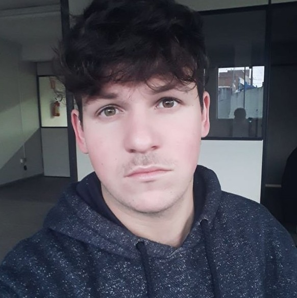

Atualmente, trabalho como engenheiro de software na Vector ITC. Estou acostumado a trabalhar com a metodologia ágil SCRUM. Não tenho um campo de tecnologia especial para trabalhar. Sempre que a tecnologia em que estou trabalhando para algo novo para mim, certamente tentarei usar a Web e me dedicar a fazer o que é necessário. Por fim, tenho trabalhado com a Amazon Web Services usando o Code Commit para os projetos em que trabalho. Além disso, também estou estudando para obter meu primeiro certificado do Google para Android. Minha experiência em desenvolvimento inclui Angular, NPM, Kotlin, Ionic e Flutter. Já com banco de dados, conheço o Firebase (Cloud Firestore).
Você pode usar um aplicativo no Google Play chamado Afazeres, desenvolvido no Ionic 5.
Minha experiência em inglês é baseada em todos os idiomas e documentos que eu já tenho e estou estudando inglês em aplicativos como o Duolingo.
Tive a oportunidade de trabalhar com o arduino na faculdade e descobrir um novo hobby, conhecendo C ++.
Voluntária do Programa Impactar, na Faculdade Impacta, que se concentra em ensinar crianças refugiadas de várias idades a programar na plataforma Scratch e aprender mais sobre tecnologia, envolvê-las na sociedade